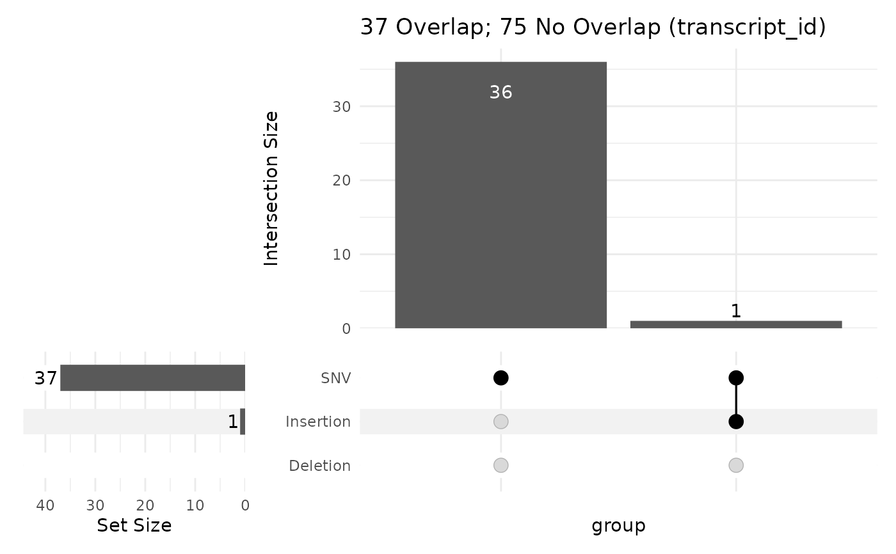

Produce an UpSet plot showing unique values from a given column
GRanges object with ranges representing a key feature such as exons
GRanges object with variants in a given column
Column within var containing the alternate allele
The column within gr to summarise results by
Passed to ComplexUpset::upset
See ComplexUpset::intersection_size for possible values
Y-axis label for the intersection panel
Passed to ComplexUpset::upset_set_size
Expand the set-size axis by this amount
logical(1) Show counts on set sizes
Horizontal adjustment of counts, if being shown
X-axis label for the set-sizes panel
Summary title to show above the intersection panel. Can be hidden by setting to NULL
An UpSet plot
Take a set of variants, classify them as SNV, Insertion and Deletion, then using a GRanges object, produce an UpSet plot showing impacted values from a given column
library(rtracklayer)
library(VariantAnnotation)
gtf <- import.gff(
system.file("extdata/gencode.v44.subset.gtf.gz", package = "transmogR"),
feature.type = "exon"
)
vcf <- system.file("extdata/1000GP_subset.vcf.gz", package = "transmogR")
var <- rowRanges(readVcf(vcf, param = ScanVcfParam(fixed = "ALT")))
upsetVarByCol(gtf, var)
